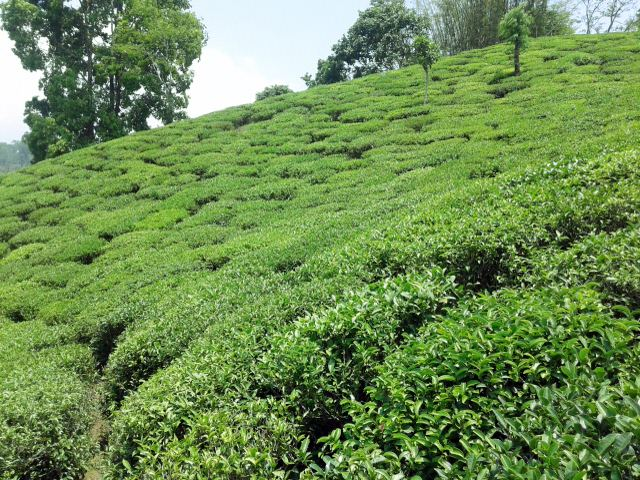
Глава I
Из чайных холмов к началу тропы
Дни 1–291 м → 1585 м
Перелёт из Катманду на восток, чайные террасы Илама, долгая дорога вдоль реки Тамор до Секатума, где заканчиваются дороги и начинается тропа.
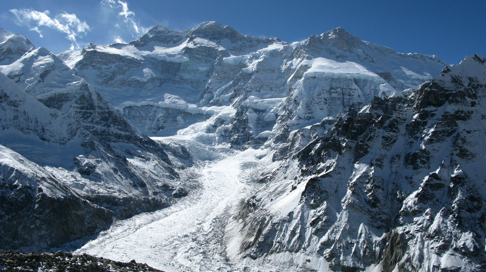
Канченджанга · Непал
Трек к северному базовому лагерю третьей вершины мира. 16 дней, две гималайские долины, цветущие леса и перевал Селе Ла. Максимальная высота 5143 м. Маленькая группа. Без альпинизма, но с настоящей физической нагрузкой.
· с Ильей Бариновым и Андреем Барановым
Обсудить участиеПервые 5 мест $, далее $
Ответим честно, подойдёт ли вам этот маршрут. Без обязательств и навязчивых продаж.
Есть Гималаи, где на тропе очереди, кофейни и вай-фай в лоджах. И есть восточный Непал, куда до сих пор нужен специальный пермит и где за день пути можно встретить только караван яков.
Мы идём к Канченджанге: 8586 метров, третья вершина мира. До середины девятнадцатого века её считали самой высокой горой планеты, а для путешественников регион открыли только в 1988 году. Он остался таким, каким был: без толп, с горными деревнями, где жизнь идёт своим чередом.
Шестнадцать дней мы поднимаемся от чайных плантаций до ледников на 5100 метрах, проходим две долины и высокий перевал. Это один из самых малолюдных больших треков Непала, и в этом весь его смысл.
Канченджанга переводится с тибетского как «Пять сокровищ великих снегов». По легенде в пяти вершинах массива спрятаны золото, серебро, камни, зерно и священные книги. У нашего пути тоже пять сокровищ.
Один из самых малолюдных больших маршрутов Непала: зона ограниченного доступа, пермиты, никакого массового туризма.
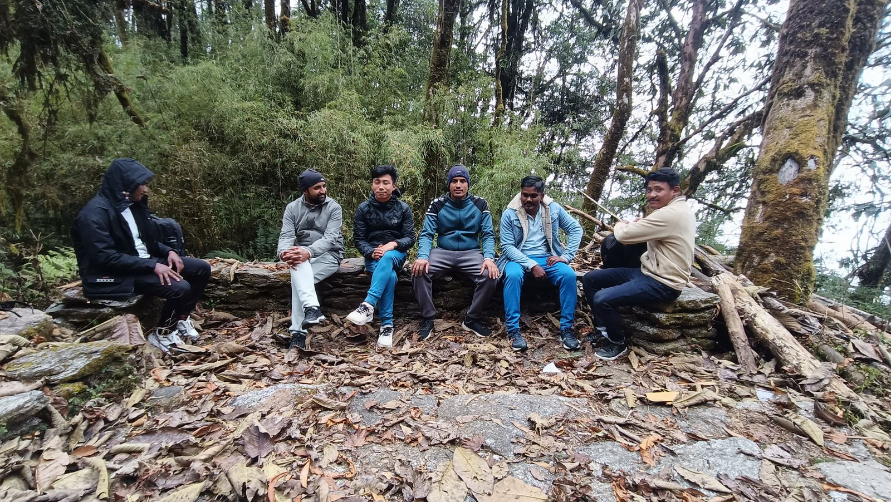
Северная стена Канченджанги над ледником и Жанну (7710 м), одна из самых суровых стен Гималаев.
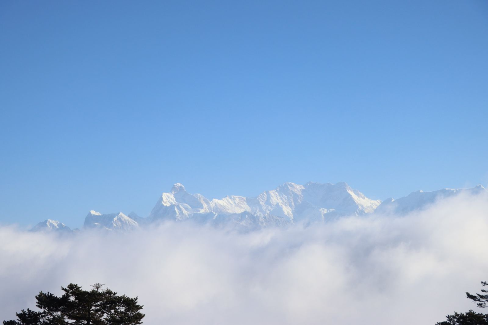
Поднимаемся долиной Гунсы, возвращаемся через перевал Селе Ла в южную долину. Маршрут не повторяет сам себя.
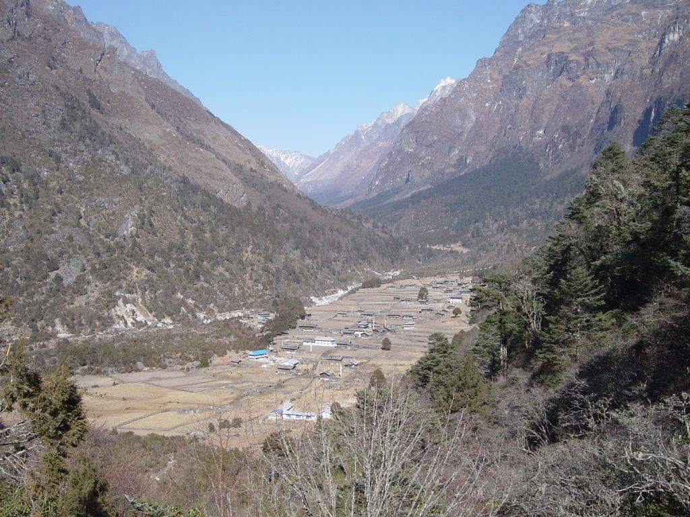
Апрельские рододендроны в цвету, деревни лимбу и шерпов, гомпы, караваны яков.
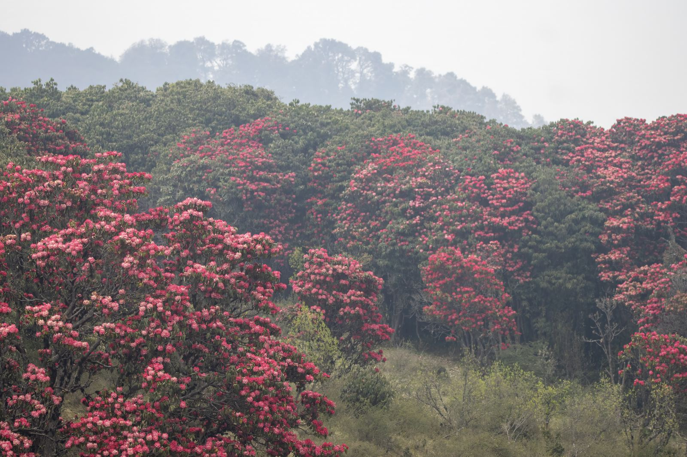
Мягкие утренние практики, вечера у печки, почти полное отсутствие связи. Две недели, когда внимание принадлежит вам.
В 1955 году Джо Браун и Джордж Бэнд остановились чуть ниже высшей точки, исполнив обещание не ступать на священную вершину. Этот жест навсегда стал частью истории Канченджанги.
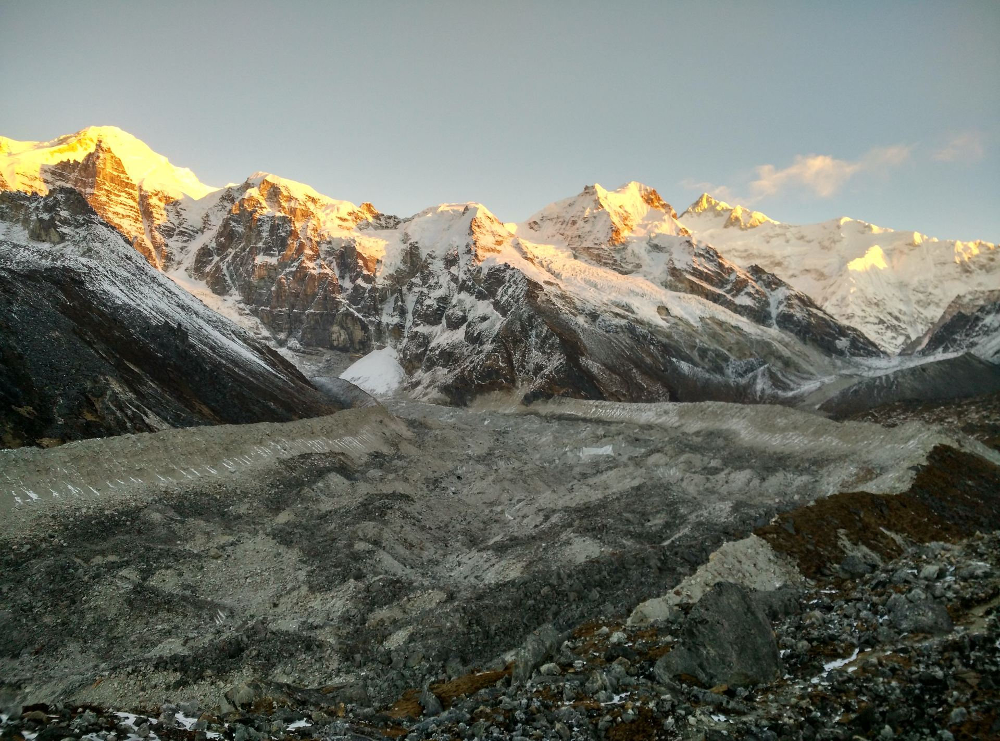
Не уверены? Напишите, разберём вашу ситуацию честно.
График акклиматизации согласован с гидом и утверждён: 16 дней. Днёвка в Гунсе с радиальным выходом на 3900 м, постепенный набор до Камбачена и Лонака, радиальный выход к Пангпеме без ночёвки наверху по правилу «поднимайся высоко, спи ниже».

Глава I
Дни 1–291 м → 1585 м
Перелёт из Катманду на восток, чайные террасы Илама, долгая дорога вдоль реки Тамор до Секатума, где заканчиваются дороги и начинается тропа.
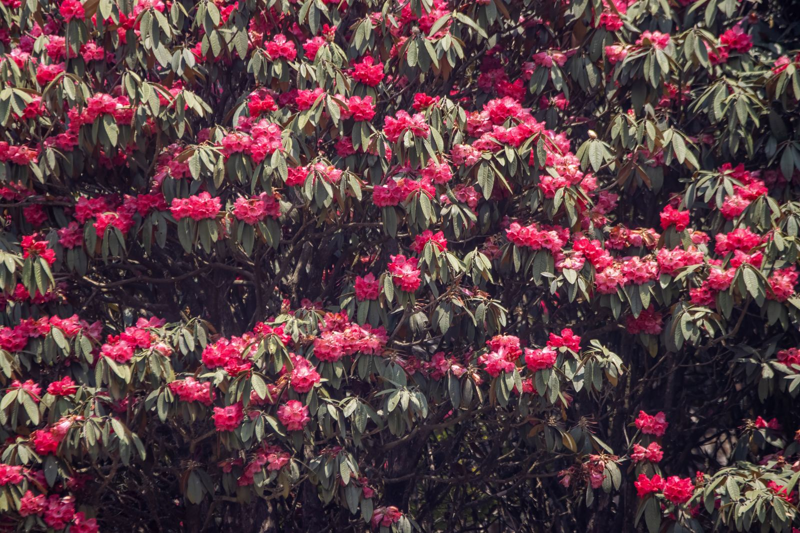
Глава II
Дни 3–61585 м → 3500 мдень акклиматизации
Ущелье реки Гунса, подвесные мосты, рододендроны в полном апрельском цвету, шерпские деревни. Гунса: гомпа, молитвенные барабаны, днёвка по всем правилам высоты.
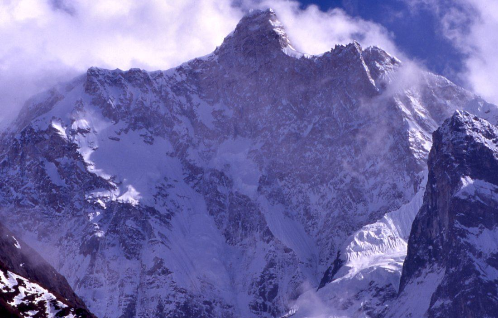
Глава III
Дни 7–93500 м → 5143 м
За границу леса: Камбачен под стеной Жанну, морены Лонака, и главный день: рассветный выход к Пангпеме, северному базовому лагерю, под трёхкилометровую стену Канченджанги.
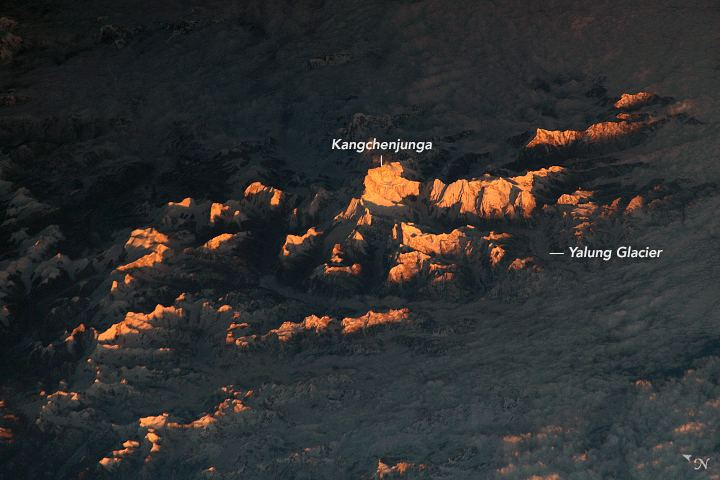
Глава IV
Дни 10–12спуск до 3500 м, перевал ~4600 м
Возвращение в Гунсу и поворот в горы: высокий лагерь, связка седловин Селе Ла с видами до Макалу в ясную погоду, долгий спуск в долину Симбуа Кхолы.
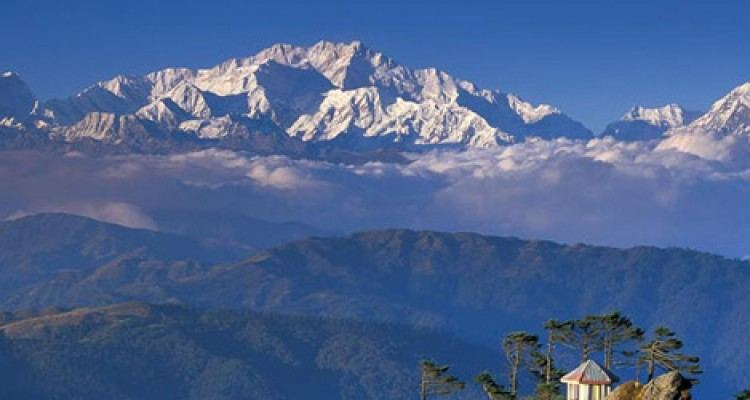
Глава V
Дни 13–16спуск к 91 м
Древний лес южной долины, террасные поля, первые за две недели дороги, джипы до Тапледжунга и Бхадрапура, вечерний перелёт в Катманду вдоль всей гряды.
День 1 · 5 апреляКатманду — Бхадрапур — Илам
≈1680 мперелёт + переезд
Утренний перелёт из Катманду на восток, 45 минут над всей грядой Гималаев за иллюминатором. Дальше дорога вверх, в холмы Илама, через чайные плантации Каньяма: изумрудные террасы до горизонта. Первый вечер в прохладе холмов, чай оттуда же, с соседнего склона.
День 2 · 6 апреляИлам — Секатум
1585 м7–8 ч переезд
Длинный красивый переезд на джипах вглубь района Тапледжунг. Дорога петляет над рекой Тамор, деревни становятся реже, горы ближе. К вечеру мы в Секатуме, у слияния рек, где заканчивается дорога и начинается тропа.
День 3 · 7 апреляСекатум — Амджилоса
2500 м5–6 ч
Первый ходовой день, и сразу характер: тропа идёт ущельем реки Гунса, вверх и вниз по склонам, через подвесные мосты. Субтропический лес, водопады, бабочки. Вечером первая деревня лимбу на уступе над рекой.
День 4 · 8 апреляАмджилоса — Гьябла
2730 м4–5 ч
Мягкий день. Лес меняется: появляются рододендроны, в апреле они в полном цвету. Идём сквозь красно-розовые склоны, слушаем реку внизу. Гьябла: тихая шерпская деревня, вечер у печки.
День 5 · 9 апреляГьябла — Гунса
3500 м5–6 ч
Долина раскрывается. Лес становится хвойным, воздух прозрачным и холодным. К вечеру приходим в Гунсу, главную деревню долины: деревянные дома, гомпа, молитвенные барабаны, чортены. Здесь уже настоящий Тибет по духу.
День 6 · 10 апреляГунса, день акклиматизации
радиально 3900 мднёвка
Днёвка по всем правилам высоты: живём внизу, гуляем вверх. Поднимаемся на обзорную точку 3900 м над деревней, смотрим на долину и белые стены впереди. Практика, отдых, баня по-местному, если повезёт. Тело перестраивается, и мы ему не мешаем.
День 7 · 11 апреляГунса — Камбачен
4050 м4–5 ч
Выходим за границу леса. Тропа траверсирует склоны над рекой, впереди открывается Жанну, она же Кумбхакарна, 7710 метров: одна из самых грозных и красивых стен Гималаев. Камбачен: горстка каменных домов в широкой долине, вечером свет на стене Жанну.
День 8 · 12 апреляКамбачен — Лонак
4780 м4–6 ч
Мир становится минеральным: камень, лёд, ветер, свет. Идём вдоль морен, мимо водопадов и осыпей, воздух всё тоньше. Лонак: последний приют перед базовым лагерем, ночь под небом, в котором звёзд больше, чем черноты.
День 9 · 13 апреляЛонак — Пангпема — Лонак
5143 м8–9 ч
Главный день. Выходим до рассвета, идём вдоль ледника Канченджанги к Пангпеме, северному базовому лагерю. И вот она: северная стена Канченджанги, три километра льда и камня над головой, рядом Ялунг Канг и весь амфитеатр восьмитысячных стен. Молитвенные флаги, ветер, тишина. Побыть там, встретить гору и вернуться в Лонак.
День 10 · 14 апреляЛонак — Камбачен — Гунса
3500 м6–8 ч
Длинный спуск в обратную сторону, и это отдельное удовольствие: те же места, но новыми глазами, с горой за спиной. Обед в Камбачене, к вечеру Гунса, знакомые лица, толстый воздух, крепкий сон.
День 11 · 15 апреляГунса — высокий лагерь Селе Ла
4200 м3–5 ч
Сворачиваем с пройденной тропы: теперь наш путь через горы, в южную долину. Крутой набор через рододендроновый и можжевеловый лес, и к вечеру мы в высоком лагере под перевалом. Коротко, но насыщенно.
День 12 · 16 апреляСеле Ла — Церам
3870 м, перевал ~4600 м7–8 ч
День перевала. Проходим связку седловин на высотах около 4200–4600 метров, и в ясную погоду отсюда видно пол-Гималаев, вплоть до Макалу. Долгий спуск в долину Симбуа Кхолы, к деревне Церам. Самый требовательный день второй половины, и один из самых красивых.
День 13 · 17 апреляЦерам — Тортонг
2995 м4–5 ч
Спускаемся южной долиной сквозь древний лес: мхи, лишайники, огромные рододендроны. С каждой сотней метров вниз воздух гуще, запахов больше, тело благодарит. Тортонг: лоджи у реки, шум воды на всю ночь.
День 14 · 18 апреляТортонг — Ясанг
≈1780 м5–6 ч
Последний полноценный ходовой день. Тропа выводит из ущелья к террасным полям и деревням, навстречу первым за две недели дорогам. Вечером празднуем: маршрут пройден, круг почти замкнулся.
День 15 · 19 апреляЯсанг — Тапледжунг
≈1820 м2–3 ч пешком + 4–6 ч джип
Короткий переход до точки, где ждут джипы, и дорога в Тапледжунг через деревню с прекрасным названием Хеллок. Смотрим в окно на холмы, которые две недели назад казались началом пути, а теперь стали его рамой.
День 16 · 20 апреляТапледжунг — Бхадрапур — Катманду
91 мджип + перелёт
Длинный спуск на джипах к равнине, 178 километров серпантинов и чайных плантаций, и вечерний перелёт в Катманду. Сорок пять минут, и за иллюминатором снова вся гряда: теперь мы знаем её на ощупь.
Тибет и кора вокруг Кайласа, Патагония, Япония — с этой же командой. Живые фотографии и отзывы участников появятся здесь по мере поступления от команды.
Сомнение до поездки: текст пришлёт участник
Момент в пути: текст пришлёт участник
Роль команды: текст пришлёт участник
Что изменилось: текст пришлёт участник
Сомнение до поездки: текст пришлёт участник
Момент в пути: текст пришлёт участник
Роль команды: текст пришлёт участник
Что изменилось: текст пришлёт участник
Сомнение до поездки: текст пришлёт участник
Момент в пути: текст пришлёт участник
Роль команды: текст пришлёт участник
Что изменилось: текст пришлёт участник
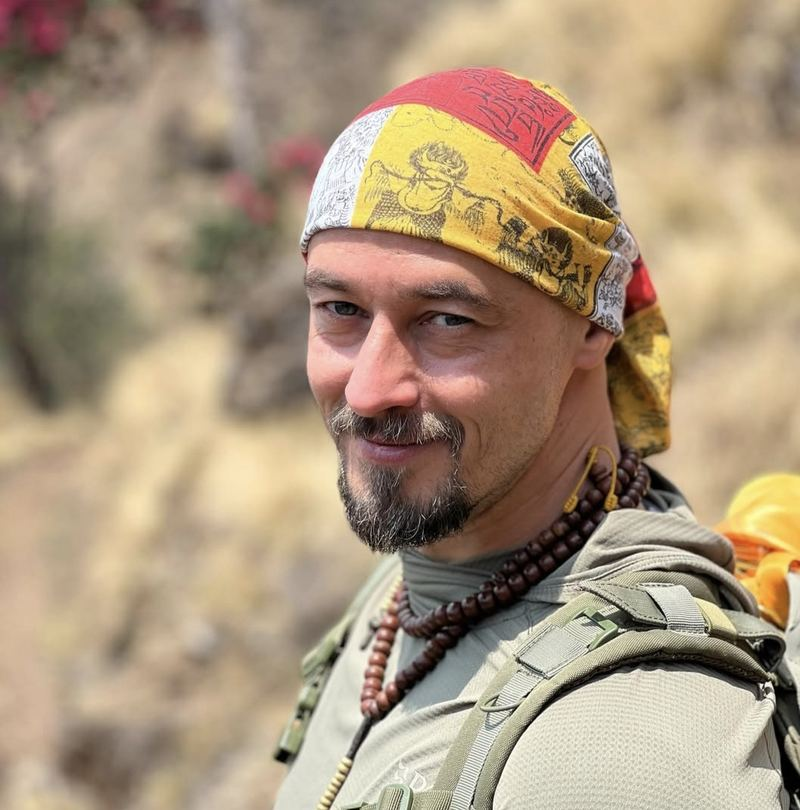
Более 20 лет занимается телесными и восточными практиками. Реабилитолог, кинезиолог, трёхкратный чемпион Европы по тайцзи-цюань. Ведущий онлайн-курса «Точка опоры». В путешествии отвечает за подготовку тела, ежедневные настройки, восстановление после переходов и внутренний ритм группы.
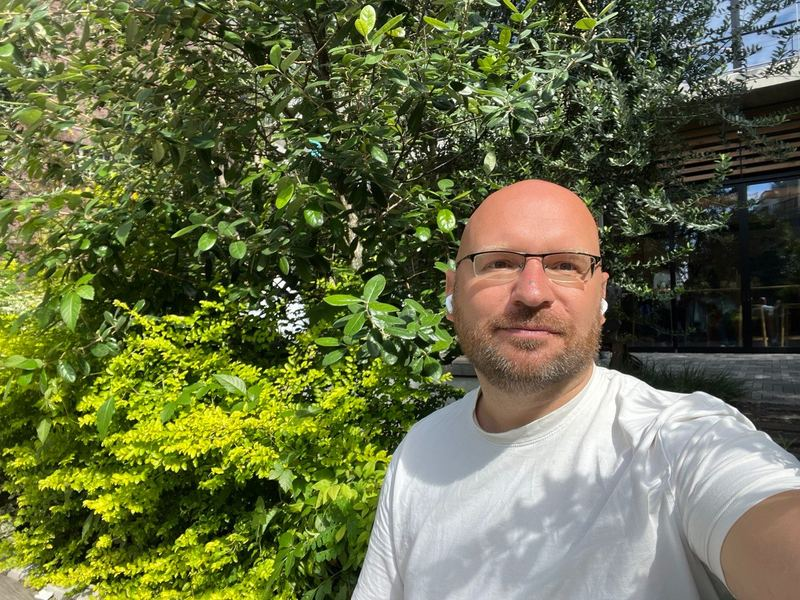
Организует путешествия и экспедиционные программы в Тибете, Патагонии, Японии, Индии и Китае. В этой поездке отвечает за всю логистику: билеты, документы, связь с местной командой, размещение и форс-мажоры, чтобы участникам не приходилось решать организационные вопросы посреди маршрута.
Лицензированный непальский гид, наш проводник ещё с тибетской коры. На маршруте финальные решения по погоде, графику и состоянию участников за ним. Для этого путешествия Манки не второстепенный персонаж, а один из главных аргументов доверия.
Живём в лоджах: простые гостевые дома, кровати, одеяла, печка в общей комнате. Едим горячее три раза в день: дал бат, супы, момо, имбирный чай. Еду каждый заказывает в лодже и оплачивает на месте, ориентир $– в день. Основные вещи несут портеры, вы идёте с дневным рюкзаком (вода, тёплый слой, перекус). Утром короткая мягкая практика: дыхание и суставная настройка, чтобы тело входило в ходовой день собранным. Все практики адаптированы к высоте и состоянию группы, участие добровольное. Связи на маршруте почти нет, и через пару дней это начинает нравиться.
$ для первых пяти участников
Затем стоимость составит $
Предоплата для бронирования места: $
Остаток: по прилёту в Катманду
Обсудить участиеВ группе будет не более человек.
По ранней цене осталось мест.
Программа: , 16 дней (утверждено).
Прилёт в Катманду: до вечера 4 апреля. Отель бронируете сами, подскажем, где остановимся мы, можно заселиться рядом. Утром 5 апреля забираем всех и вместе едем в аэропорт на рейс в Бхадрапур.
Обратные билеты из Катманду: не раньше 21 апреля, надёжнее 22-е: вечерний перелёт из Бхадрапура в последний день зависит от погоды, запасной день снимает риск опоздать на международный рейс.
Норма багажа на внутреннем рейсе Катманду — Бхадрапур: около 15 кг в багаж и 5 кг ручной клади, точную норму уточним ближе к дате у авиакомпании.
Помогаем с подбором перелётов и отеля в Катманду.
Нет. Маршрут не технический: не нужны верёвки, кошки или альпинистское снаряжение. Но это серьёзный высотный трекинг, и нужна хорошая физическая форма, разношенные ботинки и готовность идти 6–8 часов несколько дней подряд.
График построен с учётом акклиматизации: днёвка в Гунсе, постепенный подъём, правило «поднимайся высоко, спи ниже» на радиальном выходе к Пангпеме. Мы ежедневно контролируем самочувствие группы, в аптечке пульсоксиметр и всё нужное для высоты. Если состояние ухудшается, гид меняет темп или организует спуск с сопровождением.
Апрель — один из лучших сезонов: ясные утра, стабильные тропы, цветущие рододендроны на средних высотах. Днём в долинах тепло, на высоте у ледников холодно, возможен ветер и снег.
На большей части маршрута связи почти нет, это часть замысла путешествия. В отдельных лоджах можно найти местную симку или Wi-Fi, но рассчитывать на это не стоит. У гида есть спутниковый канал на случай чрезвычайной ситуации.
Да. Основа рациона — дал бат, супы, момо, имбирный чай, во многих лоджах есть простые вегетарианские блюда. Питание на треке оплачивается самостоятельно на месте, ориентир $20–30 в день.
Только дневной рюкзак: вода, тёплый слой, дождевик, перекус, документы. Основные вещи несут портеры.
Скажите об этом гиду или Илье сразу, не терпите молча. Есть возможность скорректировать темп, идти медленнее или ограничить радиальный выход. Прислушиваться к себе и говорить о состоянии — часть безопасности, а не проявление слабости.
Обязательна страховка с покрытием треккинга до высоты 5500 м и вертолётной эвакуацией. Мы подскажем проверенные варианты, но оформляете вы её самостоятельно и присылаете нам полис перед стартом.
Визу оформляют по прилёту в аэропорту Катманду: анкета, визовый сбор, штамп. Процедура простая и занимает обычно 20–40 минут.
Да, и мы рекомендуем прилететь в Катманду за день-два до общего сбора. Обратные билеты советуем брать не раньше 21 апреля, надёжнее 22-го, с учётом возможных задержек внутреннего рейса.
Это нормальная часть горного путешествия. Если рейс, тропа или погода не позволяют идти по плану, гид меняет маршрут, порядок дней или темп. В графике заложен буфер на такие случаи, безопасность всегда важнее расписания.
Андрей Баранов · Telegram t.me/vsemaya · WhatsApp